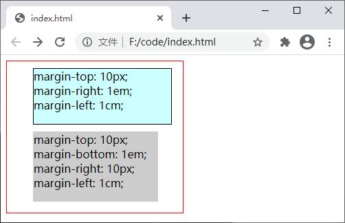
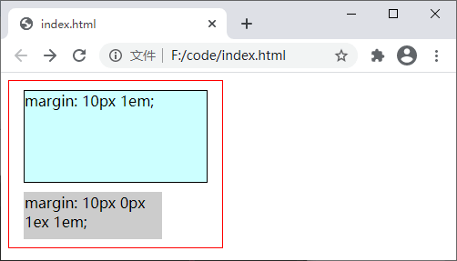
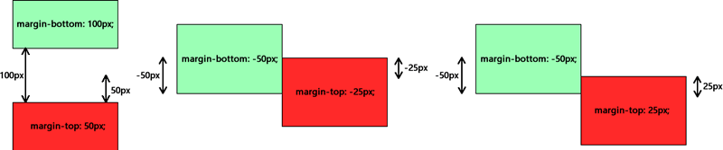

CSS margin（外边距）
元素的外边距（margin）是围绕在元素边框以外（不包括边框）的空白区域，这片区域不受 background 属性的影响，始终是透明的。
上述外边距属性的可选值如下表所示：
【示例】使用 margin-top、margin-bottom、margin-right、margin-left 几个属性分别设置元素四个方向上的外边距：
这里需要特别说明一下 margin 属性，与其它几个属性不同，margin 属性可以接受 1~4 个参数（参数之间使用空格分隔）：
【示例】使用 margin 属性为元素设置外边距：
1) 在相邻的两个兄弟元素之间：
2) 在父元素与其子元素之间：（注意：父元素不能定义边框和内边距，且父元素与子元素之间不能有其它元素）

图：父元素与其子元素之间的外边距折叠
为元素设置外边距
默认情况下如果不设置外边距属性，HTML 元素就是不会有外边距，但也有例外的情况，因为浏览器会为一些 HTML 元素设置默认的外边距，例如<p>元素。您可以使用下面的属性来为 HTML 元素设置外边距：- margin-top：设置元素上方的外边距；
- margin-bottom：设置元素下方的外边距；
- margin-right：设置元素右侧的外边距；
- margin-left：设置元素左侧的外边距；
- margin：外边距的简写属性，可以同时设置元素四个方向（上下左右）的外边距。
上述外边距属性的可选值如下表所示：
| 值 | 描述 |
|---|---|
| auto | 由浏览器计算外边距的尺寸 |
| length | 使用具体数值配合 px、cm 等单位来定义元素外边距的尺寸，可以为负值，默认值为 0px |
| % | 定义基于父元素的宽度百分比的外边距，可以为负值 |
| inherit | 从父元素继承外边距属性的值 |
【示例】使用 margin-top、margin-bottom、margin-right、margin-left 几个属性分别设置元素四个方向上的外边距：
<!DOCTYPE html>
<html>
<head>
<style>
div.box-one {
border: 1px solid red;
display:inline-block; /*将元素转换为行内元素*/
}
div.box-two {
/*为了能更直观的看出效果，这里为元素设置上边框和背景色*/
border: 1px solid black;
background: #CFF;
width: 200px;
height: 80px;
margin-top: 10px;
margin-right: 1em;
margin-left: 1cm;
}
div.box-three {
/*为了能更直观的看出效果，这里为元素设置上边框和背景色*/
border: 1px solid #CCC;
background: #CCC;
width: 180px;
height: 100px;
margin-top: 10px;
margin-bottom: 1em;
margin-right: 10px;
margin-left: 1cm;
}
</style>
</head>
<body>
<div class="box-one">
<div class="box-two">
margin-top: 10px;<br>
margin-right: 1em;<br>
margin-left: 1cm;
</div>
<div class="box-three">
margin-top: 10px;<br>
margin-bottom: 1em;<br>
margin-right: 10px;<br>
margin-left: 1cm;
</div>
</div>
</body>
</html>
运行结果如下图所示：

图：margin-top、margin-bottom、margin-right、margin-left 属性演示
图：margin-top、margin-bottom、margin-right、margin-left 属性演示
这里需要特别说明一下 margin 属性，与其它几个属性不同，margin 属性可以接受 1~4 个参数（参数之间使用空格分隔）：
- 如果提供四个参数，那么将按照上、右、下、左的顺序分别作用于元素四个方向的外边距；
- 如果提供三个参数，那么第一个参数会作用在元素上方的外边距，第二个参数会作用在元素左右两侧的外边距，第三个参数则作用在元素下方的外边距；
- 如果提供两个参数，那么第一个参数会作用在元素上方和下方的外边距，第二个参数会作用在元素的左右两侧的外边距；
- 如果只提供一个参数，那么这个值将同时作用于元素上下左右四个方向的外边距。
【示例】使用 margin 属性为元素设置外边距：
<!DOCTYPE html>
<html>
<head>
<style>
div.box-one {
border: 1px solid red;
display:inline-block; /*将元素转换为行内元素*/
}
div.box-two {
/*为了能更直观的看出效果，这里为元素设置上边框和背景色*/
border: 1px solid black;
background: #CFF;
width: 200px;
height: 100px;
margin: 10px 1em;
}
div.box-three {
/*为了能更直观的看出效果，这里为元素设置上边框和背景色*/
border: 1px solid #CCC;
background: #CCC;
width: 150px;
height: 50px;
margin: 10px 0px 1ex 1em;
}
</style>
</head>
<body>
<div class="box-one">
<div class="box-two">margin: 10px 1em;</div>
<div class="box-three">margin: 10px 0px 1ex 1em;</div>
</div>
</body>
</html>
运行结果如下图所示：

图：margin 属性演示
图：margin 属性演示
外边距折叠
外边距折叠指的是相邻的两个或多个外边距会在垂直方向上发生合并，合并为一个外边距。关于外边距折叠有以下几点需要注意：- margin 折叠只发生在块级元素上；
- 浮动元素的外边距不会与任何外边距发生折叠；
- 设置了 overflow 属性且值不为 visible 的块级元素，将不会与它的子元素发生外边距折叠；
- 绝对定位元素的外边距不与任何外边距发生折叠；
-
根元素（例如
<body>）的外边距不与其它任何外边距发生折叠。
1) 在相邻的两个兄弟元素之间：
- 如果相邻两个元素外边距的值都为正数，那么两个元素的实际间距为两个外边距中较大的那个；
- 如果相邻两个元素外边距的值都为负数，那么两个元素的实际间距为两个外边距中较小的那个；
- 如果相邻两个元素外边距的值一个为正数、一个为负数，那么两个元素之间的实际间距为两个外边距相加的和。

图：相邻兄弟元素之间的外边距折叠
图：相邻兄弟元素之间的外边距折叠
2) 在父元素与其子元素之间：（注意：父元素不能定义边框和内边距，且父元素与子元素之间不能有其它元素）
- 如果父元素与子元素外边距的值都为正数，那么折叠后的外边距为两个外边距中较大的那个；
- 如果父元素与子元素外边距的值都为负数，那么折叠后的外边距为两个外边距中较小的那个；
- 如果父元素与子元素外边距的值一个为正数、一个负数，那么折叠后的外边距为两个外边距相加的和。
图：父元素与其子元素之间的外边距折叠
关注公众号「站长严长生」，在手机上阅读所有教程，随时随地都能学习。内含一款搜索神器，免费下载全网书籍和视频。

微信扫码关注公众号